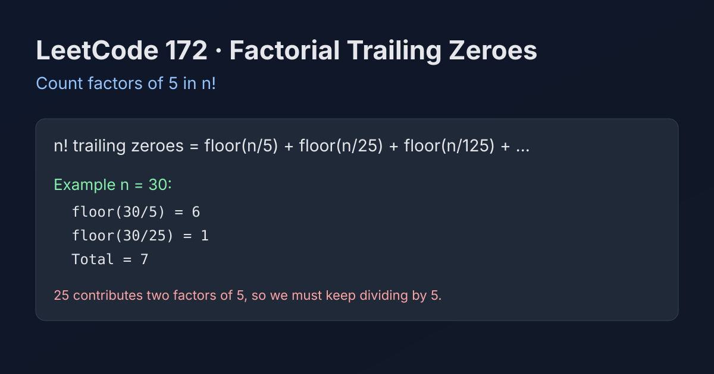

LeetCode 172: Factorial Trailing Zeroes (Count Factors of 5)
LeetCode 172MathNumber TheoryInterviewToday we solve LeetCode 172 - Factorial Trailing Zeroes.
Source: https://leetcode.com/problems/factorial-trailing-zeroes/

English
Problem Summary
Given an integer n, return how many trailing zeroes are in n!.
Key Insight
Each trailing zero comes from a factor pair 2 × 5. In factorials, factors of 2 are abundant, so the answer is exactly how many factors of 5 appear in numbers from 1..n.
Brute Force and Limitations
Computing n! directly will overflow quickly and is unnecessary. We only need factor counting, not the factorial value.
Optimal Algorithm Steps
1) Initialize ans = 0.
2) Repeatedly divide n by 5.
3) Add each quotient to ans.
4) Stop when n == 0.
Complexity Analysis
Time: O(log₅ n).
Space: O(1).
Common Pitfalls
- Forgetting higher powers like 25, 125 contribute extra 5s.
- Trying to compute factorial directly.
- Using floating-point operations instead of integer division.
Reference Implementations (Java / Go / C++ / Python / JavaScript)
class Solution {
public int trailingZeroes(int n) {
int ans = 0;
while (n > 0) {
n /= 5;
ans += n;
}
return ans;
}
}func trailingZeroes(n int) int {
ans := 0
for n > 0 {
n /= 5
ans += n
}
return ans
}class Solution {
public:
int trailingZeroes(int n) {
int ans = 0;
while (n > 0) {
n /= 5;
ans += n;
}
return ans;
}
};class Solution:
def trailingZeroes(self, n: int) -> int:
ans = 0
while n > 0:
n //= 5
ans += n
return ansvar trailingZeroes = function(n) {
let ans = 0;
while (n > 0) {
n = Math.floor(n / 5);
ans += n;
}
return ans;
};中文
题目概述
给定整数 n，返回 n! 末尾 0 的个数。
核心思路
末尾 0 来自 2 × 5。在阶乘中 2 的数量远多于 5，所以答案就是 1..n 中因子 5 的总数量。
暴力解法与不足
直接算 n! 很快溢出，而且没必要。我们只需要统计 5 的个数，不需要真的得到阶乘值。
最优算法步骤
1）初始化 ans = 0。
2）不断将 n 整除 5。
3）每次把商累加到 ans。
4）当 n == 0 结束。
复杂度分析
时间复杂度：O(log₅ n)。
空间复杂度：O(1)。
常见陷阱
- 忽略 25、125 这类数会贡献多个 5。
- 误以为必须先算出阶乘。
- 用浮点运算代替整数除法导致误差。
多语言参考实现（Java / Go / C++ / Python / JavaScript）
class Solution {
public int trailingZeroes(int n) {
int ans = 0;
while (n > 0) {
n /= 5;
ans += n;
}
return ans;
}
}func trailingZeroes(n int) int {
ans := 0
for n > 0 {
n /= 5
ans += n
}
return ans
}class Solution {
public:
int trailingZeroes(int n) {
int ans = 0;
while (n > 0) {
n /= 5;
ans += n;
}
return ans;
}
};class Solution:
def trailingZeroes(self, n: int) -> int:
ans = 0
while n > 0:
n //= 5
ans += n
return ansvar trailingZeroes = function(n) {
let ans = 0;
while (n > 0) {
n = Math.floor(n / 5);
ans += n;
}
return ans;
};
Comments